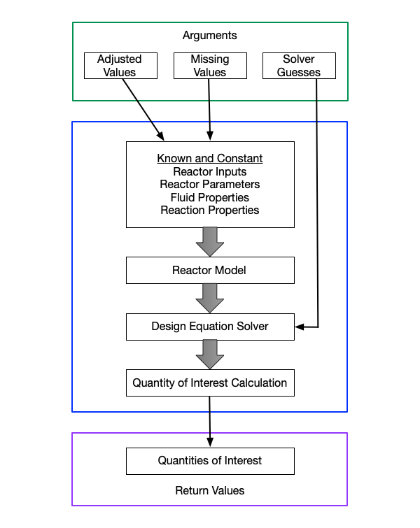

7 Reactor Response Functions
In Reaction Engineering Basics, every assignment that involves a reactor is completed in five basic steps.
- Summarize the information provided in the assignment.
- Formulate the solution mathematically.
- Implement the solution numerically.
- Execute the solution.
- Report and comment upon the results.
Mathematical formulation of the solution (step 2) requires a reactor model. The set of equations that constitute the reactor model for a given reactor are called the reactor design equations for that reactor. The reactor design equations establish the relationship between reactor inputs, reactor outputs, reactor parameters, reaction properties and fluid properties. Chapter 6 described how to select the design equations needed to model a given chemical reactor.
The numerical implementation of a solution (step 3) includes solving the reactor design equations. In Reaction Engineering Basics, that occurs with a computer function that will be referred to as the reactor response function for that reactor. This brief chapter explains why it is being called a reactor response function (or just response function, for short), the general structure of a response function, the kinds of arguments that may be passed to a response function, and the values a response function returns.
7.1 Reactor Response
Consider a chemical reactor that has been designed and built for the purpose of using known reactions to process a specified fluid mixture. In that situation, the reaction properties and fluid properties are fixed, as are all of the reactor parameters other than the reaction time. In this scenario, setting the reaction time and the reactor inputs results in specific reactor outputs that can be calculated using the reactor design equations. The resulting reactor outputs can be thought of as how the reactor “responds” when the reaction time and reactor inputs are set.
In Table 6.1 the reactor outputs were identified as the molar amounts or flow rates of the reagents in the fluid leaving the reactor, the temperature and pressure of that fluid, the temperature of the exchange fluid leaving the reactor and the mechanical work done by the reactor on its surroundings. More generally, any quantity that is related to the reactor outputs can be considered to be a reactor response. Thus, for example, the conversion of a reagent that results after the reactor parameters and reactor inputs are set may be considered to be a reactor response.
The reactor design equations are not always solved to find the reactor response. Other quantities of interest can be calculated by solving the reactor design equations. For example, a reaction engineer may be interested in knowing what reactor volume is necessary in order to produced some desired reactor response. In this case, the reactor response is known and the design equations are being solved to find a reactor parameter, i. e. the reactor volume. The key point is that the reactor outputs, and by extension, the reactor response, are related to the reactor inputs and reactor parameters by the reactor design equations. This assumes that properties of the fluids and reactions involved in the process are known.
7.2 Reactor Response Function
As stated in the introduction to this chapter, in Reaction Engineering Basics the reactor design equations are solved numerically within a computer function that will be referred to as the (reactor) response function. It was just noted that the reactor design equations are not always solved to find the reactor response, so one may ask why it is called the response function. Without going into details that will be presented later in the book, there are two good reasons for calling it a response function.
The first reason is that during the analysis of kinetics data, the design equations are always solved to find the reactor response. When a reaction engineer performs kinetics experiments, they set the reaction time and the reactor inputs, and they measure a reactor response. When the experimental data are subsequently analyzed, the reaction engineer must construct a mathematical model for the experiments. The engineer uses the reactor design equations to model the experiments. The reaction time and reactor inputs used in the experiments are put into the reactor design equations, and the design equations are then solved to find the model-predicted value of the reactor response that was measured in the experiments.
With the exception of a steady-state CSTR, when using numerical methods, the reactor design equations must always be solved for a reactor response. Paradoxically, this is true, even when the response is known and the quantity of interest is a reactor parameter or reactor input. The reason why this is true will be described in a later chapter. Put differently, for all ideal reactors other a steady-state CSTR, the reactor design equations must first be solved for a reactor response before any other quantity of interest can be calculated. This is the second reason for calling the function that does this a response function.
In general, a reactor response function solves the reactor design equations to find the reactor outputs (i. e. outlet molar amounts outlet temperature and pressure, outlet exchange fluid temperature, and work done on the surroundings). It then uses those results to calculate all other quantities of interest. The quantities of interest may be reactor responses other than the reactor outputs (e. g. conversion, yield, selectivity, etc.) as well as a reactor parameter (e. g. volume) or a reactor input (e. g. feed temperature). Typically a response function is written for a specific reaction engineering analysis or assignment, and its output or return values are the quantities of interest in that analysis or assignment. The structure of the response function, the arguments passed to it, the values it returns and the way it is used to complete an assignment can vary slightly depending upon the specific assignment. The general structure of a response function is shown schematically in Figure 7.1.

7.3 Response Function Arguments
Depending on the type of analysis being performed and the specifics of that analysis, it may be necessary to pass the values of some quantities to the response function as arguments. In the simplest situation, no arguments are needed, and when called, the response function returns the values of the quantities of interest.
In some reaction engineering assignments one or more quantities are varied over a range of values and the reactor design equations must be solved repeatedly using each of the values in that range. In Figure 7.1 the quantities that are varied are called “Adjusted Values.” Typically the adjusted values are passed to the response function as a vector or matrix argument. In this situation, the return values will be a vector or matrix containing the quantities of interest that correspond to each of the adjusted inputs.
In other types of reaction engineering analyses and assignments it is not possible to solve the reactor design equations at the outset of the analysis because the values of one or more variables that are needed are not known. In Figure 7.1 these are indicated as “Missing Values.” In these situations, the response function is written with the assumption that the missing values will be passed to the response function when the time comes to solve the design equations.
When the design equations are ATEs, a guess for the unknowns usually must be provided when solving them. In some cases, these guesses can be included within the response function. However, if it becomes necessary to change the guesses, the response function will need to be edited. An alternative approach is to pass guesses to the response function as an argument. This is indicated in Figure 7.1 as “Solver Guesses.”
Finally it must be noted that in some situations, the response function is passed as an argument to other software. An example where this can occur is in the analysis of kinetics data. Software known as parameter estimation software is used during kinetics data analysis, and the response function must be passed to the parmeter estimation software as an argument. The parameter estimation software may expect the response function to have a specific number and type of arguments in a specific order. In this case, the response function must be written with that number and type of arguments in the order expected by the parameter estimation software.
In conclusion, this section has shown that the response functions used in one type of analysis or assignment will differ from the response functions used in other types of analysis. A more detailed description of each variety of response function will be presented in later chapters at the point where they are first needed.